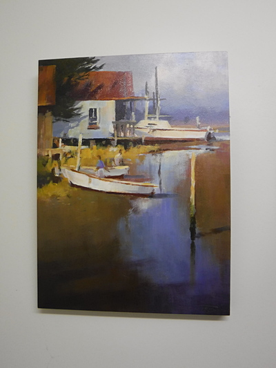
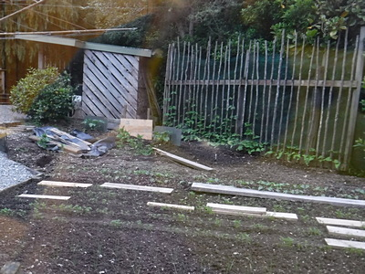
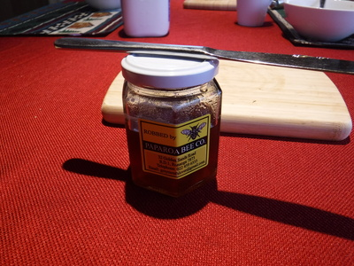
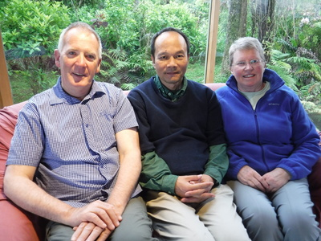
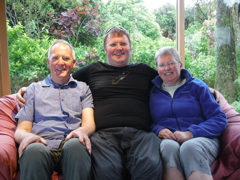
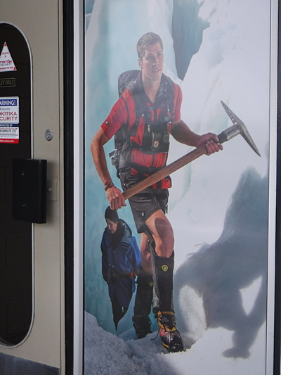
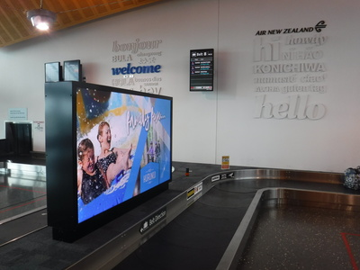

釣行日誌 ＮＺ編 「一期一会の旅：A Sentimental Journey」
ホキティカからオークランドへ
11/26(MON)-1
ウェストランドでの最後の朝は、６時前に起きた。少々痛みを左腕と足腰におぼえたので、持ってきた筋肉痛の軟膏を塗り込んでおいた。トシだなぁ....（笑）
客間の壁には、おそらくブリントさんの初期の作品と思われる岸辺のボートハウスを描いた１点が飾られていた。

窓から外の野菜畑を覗くと、８年前に僕も手伝って作ったように、垂直に伸びる豆のツルのための枝木が整然と立てられており、その丹精込められた仕事ぶりに感心した。

着替えて起き出して行くとグレースさんが畑の一角に設えてある野鳥のための餌台を見せてくれた。
「こうして種なんかを置いておくと、何種類も鳥が来てくれるのよ。」
夫人がにっこり笑った。
朝食は、ホキティカから少し北のグレイマウスにある「パパロア・ビー」という会社の地元産蜂蜜を塗ったトーストとホットミルクを頂いた。

食後は居間に集まり、皆で記念写真を撮した。今度会えるのはいつになるだろうと思うと、感慨がこみ上げてきた。


こうして改めて見直すと、ディーンの巨体ぶりがよくわかる。（笑）
また今回もいろいろとお世話になったお礼を述べ、玄関で見送ってくれた夫妻に別れを告げる。ディーンがトラックでホキティカ空港まで送ってくれた。チェックインを済ませバックパックを預け、いったん外へ出てディーンと立ち話をした。空港のエントランスには、2010年にブリントさんが崖の上から大物ブラウンを釣り上げた懐かしの峡谷や、氷の谷をゴツイピッケルを持って登って行くアルピニストなどのパネルが綺麗に飾られている。ニュージーランドの空港はどこもこういったデザインセンスが優れているので感心させられる。成田空港の殺風景な長い通路に有り余った空間の活用法を誰か考えつかないものかと残念に思えた。

聞けばこの写真の登山家はディーンの知り合いだそうだ。ウェストランドでは人が少ないから皆知り合いだろうな。（笑）
午前9時を回り、出発の時刻となったのでディーンとも別れをかわし、雨に濡れた滑走路を歩いてNZ8831便の小型機に乗り込む。定刻通りに出発した機は、往路と同じく40分ほどの飛行でクライストチャーチ空港に着陸した。とりあえず荷物を受け取らねばと思い、バゲージクレームの表示を確認して、ベルトナンバー８番の前で旧いバックパックが出てくるのを待つ。

ところが30分近く待っても何も出てこない。他の乗客で待っている人も居ない。おかしいなあ？？と思って係の人に尋ねてみると、ホキティカからの荷物はこのベルトで待っていれば良いとの答え。ああ、やっぱりここで良いのだ。と、トイレに行って戻って来たところでハッと気付いた。ホキティカで預けた荷物はオークランド空港までそのまま運ばれるので、ここではいくら待っても出てこないのだ！（笑） 鰐部さんが一緒ならこんなドジは踏まないのだけどなぁ....と思いつつ、オークランド行きの搭乗ゲートへ急ぐ。まぁ時間は余裕だったが。オークランドに着いてからのスケジュールがタイトなので、来た時と同じカフェでサンドイッチとオレンジジュースを買い、テーブルで少し早めの昼食を済ませる。
正午過ぎにNZ542便、エアバス320R機が離陸した。なかなか広い座席に座っていると、どっと疲れが出てきてうたた寝をしている間にオークランド空港に着陸した。
バゲージクレームで今度はしっかりと出てきたバックパックを受け取り、キャリーに載せてハーツ・レンタカーの店舗へと急ぐ。８年前の釣行時には鰐部さんがレンタカーを手配・予約してくれたのだが、今回は自分で探した。手持ちのクレジットカードと提携しており、割引のあるハーツ社と、前回利用した Europe 社と比べたらほとんど同じだったので今年はハーツを選んだのだ。店舗は国内線ターミナルの正面にあり、すぐに予約が確認できて、国外免許と日本の免許証を提示して、カードで支払いを済ませて店舗裏の屋内駐車場に停めてある車に向かう。カーナビのオプションもあったが、使いこなす自信が無かったので頼まなかった。当たった車はトヨタカローラのハッチバックで、今ではあまり日本で見られないモデルである。色は真っ赤！ こりゃ川沿いの農道に停めたら目立つな....と懸念されたがそんなことは言ってられない。
バックパックとデイパックをブーツに入れ（なぜかニュージーランドでは車の後部トランクのことを“ブーツ”と呼ぶ）、いったん店に戻って燃料の種類を確認し、無鉛の安い方＝緑色のノズル と聞いてからこんどはまた国際線ターミナルへと歩いてとって返す。天気は晴れており、屋外通路でも問題無い。マクドナルドの横にあるボーダフォンの売り場に行き、予約しておいた２番目に安いガラケー（フィーチャーフォン）を購入する。去年からメールでいろいろと問い合わせを重ねてきた主任のチェンチェンさんはいますかと訊ねると、パッケージを出してきてくれた女性がその人であった。お礼を述べ、携帯電話にSIMを入れて使える状態にしてもらい、番号を入れて発信する方法だけ教えてもらってから代金を払い、パッケージを持って店を後にした。
レンタカーの駐車場に戻り、デイパックから地図の入ったクリアファイル、サングラス、運転用の皮手袋、眠気防止のキツイ味のチューインガムなどを取り出し、空港から30分ほどのグリーン・ベイ地区にある語学学校時代のホストマザーであったジョー・ハーマン夫人の住むリタイヤメントハウスを目指す。
釣行日誌ＮＺ編 目次へ
サイトマップ
ホームへ
お問い合わせ